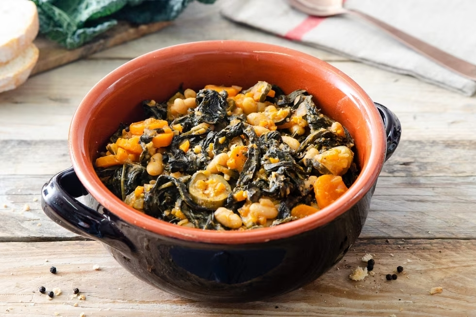

Zuppa toscana
Detta anche zuppa di pane, è un piatto di pane raffermo e verdure tipico di numerose parti della Toscana, in particolare della Montagna Pistoiese e della zona di Prato e Firenze. Fa parte dei tipici prodotti della cucina povera toscana.
Ingredienti
- 300 gr di cavolo nero
- 250 gr di patate
- 2 carote medie
- 200 ge di zucchine
- 2 gambi di sedano
- 1 piccola cipolla bionda
- 50 gr di cannellini lessati
- 250 gr di rigatino( pancetta stesa)
Preparazione
- Tagliate la cipolla al velo, le carote e il sedano a piccole rondelle e stufate il tutto in poco olio e sale.
- Unite il cavolo tagliato a striscioline e privato della maggior parte delle dure venature bianche.
- Aggiungete le patate a dadini, i cannellini, il pomodoro e il rigatino a pezzettini.
- Lasciate cuocere a fuoco dolce per circa 15 minuti, mescolando spesso e regolando di sapore con il sale e il peperoncino.
- Unite le zucchine a pezzetti, una presa di prezzemolo tritato finissimo, mescolate e coprite con 300′ ml di acqua bollente.